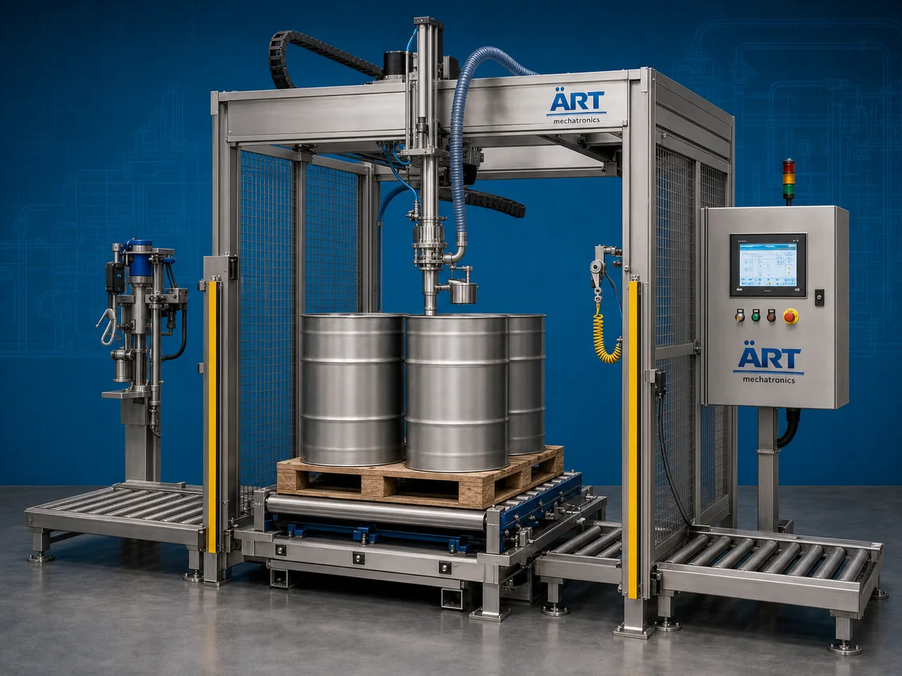

Palletized Drum Filling Machine (Automatic Drum Filling System on Pallets)
A Palletized Drum Filling Machine, also known as a Drum Filling System on Pallets, Pallet Drum Filling Machine, Automatic Palletized Barrel Filling System, or Bulk Drum Packaging Machine, is an advanced industrial packaging solution designed for automatic palletized drum handling, weighing, liquid filling, dosing, sealing, capping, labeling, coding, and high-capacity bulk packaging operations for chemicals, lubricants, industrial oils, paints, solvents, agrochemicals, liquid fertilizers, and heavy industrial liquid packaging applications.

About the Palletized Drum Filling
Palletized drum filling systems are widely used for:
- Chemical drum filling on pallets
- Lubricant barrel packaging
- Industrial oil drum filling
- Paint drum packaging
- Solvent drum filling
- Agrochemical barrel packaging
- Bulk liquid palletized filling
- Heavy-duty industrial liquid packaging
The machine improves:
- Filling accuracy
- Bulk handling efficiency
- Industrial safety
- Leak-proof packaging quality
- Production efficiency
- Warehouse handling efficiency
- Transportation safety
Industrial palletized drum filling machines use:
- Automatic pallet handling systems
- Servo synchronized filling systems
- PLC and HMI automation controls
- Precision load cell weighing systems
- Automatic capping and sealing systems
to automatically fill drums directly on pallets with superior packaging quality and high industrial production efficiency.
Palletized drum filling machines are widely used in industries such as:
Chemical industries Lubricant industries Petrochemical industries Paint industries Agrochemical industries Oil industries Industrial liquid industries Heavy process industries
where bulk liquid handling, safe industrial filling, and efficient pallet logistics are essential.
The machine is highly suitable for:
- Chemical drum pallet filling
- Lubricant barrel packaging
- Industrial oil filling
- Paint drum pallet handling
- Agrochemical liquid filling
- Bulk industrial liquid packaging
ART Mechatronics offers high-performance palletized drum filling machines, engineered for continuous industrial operation, accurate heavy-duty filling performance, safe pallet handling, and reliable long-term industrial packaging automation.
Working Principle of Palletized Drum Filling Machine
- 1. Palletized Drum Positioning Drums placed on pallets are automatically positioned into filling station using conveyor or pallet transfer systems.
- 2. Liquid Filling Process Machine automatically fills liquids into drums using precision weighing and dosing systems.
Servo synchronization ensures accurate filling and smooth palletized drum handling.
- 3. Drum Filling Operation Machine handles: ✔ Lubricants ✔ Industrial oils ✔ Chemicals ✔ Solvents ✔ Paints ✔ Agrochemicals ✔ Liquid fertilizers
accurately and continuously.
- 4. Sealing & Capping Process Machine performs: Bung tightening Cap placement Leak-proof sealing Tamper-proof sealing Nitrogen flushing (optional)
for secure and transportation-safe packaging quality.
- 5. Labeling & Inspection Integration Optional systems include: Batch coding Date printing QR code printing Weight verification systems Leak testing systems
- 6. Finished Pallet Discharge Filled palletized drums discharged automatically for: Warehouse storage Forklift handling Bulk shipment operations Export logistics
Types of Palletized Drum Filling Machines
- 1. Chemical Drum Filling System Designed for: ✔ Chemical and industrial liquid palletized packaging applications
- 2. Lubricant Drum Filling Machine Suitable for: ✔ Industrial oil and lubricant filling systems
- 3. Paint Barrel Filling Machine Uses: ✔ Paint, coating, and viscous liquid packaging systems
- 4. Multi Drum Filling System Designed for: ✔ High-speed industrial bulk filling operations
- 5. Servo Driven Drum Filling Machine Suitable for: ✔ Precision heavy-duty filling operations
- 6. Fully Automatic Palletized Drum Filling System Designed for: ✔ Complete industrial liquid packaging automation lines
Industries Using Palletized Drum Filling Machines
⚗️ Chemical Industry Industrial chemicals, solvents, and bulk chemical packaging systems. 🛢️ Lubricant & Oil Industry Lubricants, industrial oils, and heavy-duty liquid packaging systems. 🎨 Paint & Coating Industry Paints, coatings, resins, and industrial liquid packaging systems. 🌱 Agrochemical Industry Liquid fertilizers, pesticides, and agricultural chemical packaging systems. 🏭 Petrochemical Industry Industrial fluids, petrochemical liquids, and heavy industrial packaging systems. 🚛 Industrial Logistics Industry Bulk palletized liquid storage and transportation packaging systems.
Features & Advantages
- High-speed automatic palletized drum filling operation
- Accurate weighing and synchronized filling systems
- Heavy-duty industrial packaging construction
- PLC and servo automation control systems
- Improves warehouse and logistics handling efficiency
- Reduces product wastage and labor dependency
- Supports multiple drum sizes and liquid viscosities
- Reliable long-term industrial performance
- Smooth and continuous packaging operation
Technical Highlights
Machine Type: Automatic palletized drum filling machine Industrial drum filling system Bulk liquid packaging machine Packaging Material: Metal drums Plastic drums Industrial barrels Bulk palletized containers Filling Integration: Load cell weighing systems Servo dosing systems Flow meter filling systems Volumetric filling systems Features: PLC control system Servo synchronization Touchscreen HMI Automatic capping systems Pallet conveyor integration Applications: Lubricants Industrial oils Chemicals Paints Agrochemicals Solvents Automation: Semi-automatic Fully automatic industrial systems
Turnkey Palletized Drum Filling Solutions
ART Mechatronics offers: Complete palletized drum filling systems Automatic bulk liquid packaging solutions Packaging automation integration systems Pallet conveyor synchronization systems Installation & commissioning After-sales service & AMC
Why Choose Art Mechatronics
Expertise in industrial packaging and automation systems Customized bulk liquid packaging solutions for multiple industries High-performance and durable filling technology Advanced PLC and servo automation systems Proven industrial packaging performance across sectors
Applications
Chemical Manufacturing Plants Lubricant Packaging Industries Paint Manufacturing Facilities Agrochemical Industries Petrochemical Processing Units Industrial Liquid Packaging Plants
Get pricing & specs for the Palletized Drum Filling
Share the product, target capacity, current process and plant location. These details help our engineers discuss the right machine or line configuration.
One partner, from design to start-up
ART Mechatronics designs, manufactures, installs and commissions your Palletized Drum Filling solution with regional presence in India, UAE and Thailand.